Supply Box (Butler) — thưởng chuỗi thắng ngay lần đầu
Thắng liên tiếp nhiều màn thì được tặng power-up ở màn kế, thưởng càng nhiều khi chuỗi càng dài.
Mô tả
- Thắng liên tiếp nhiều màn thì được tặng power-up ở màn kế, thưởng càng nhiều khi chuỗi càng dài.
- Thua là mất chuỗi.
- Tên trong config là Butler, tên trong code là SupplyBox.
Thiết kế chi tiết
Tóm tắt thiết kế
Live 28/10 Đang bật: isButlerEnabled = true, mở từ level 101. GDD 15/09 ghi “đang tắt” vì lúc đó server tắt; ảnh 07/10 và playtest 28/10 đều thấy chạy.
CodeLive 28/10 Thanh 3 nấc trong popup trước màn. Mỗi trận thắng ngay lần đầu +1 nấc (tối đa 3), thua hoặc bỏ màn về 0. Đầu màn kế, power-up được bay vào gắn lên khối: nấc 1: Duration +5 giây; nấc 2: Duration +5 giây + Rocket; nấc 3: Duration +5 giây + Duration +10 giây + Rocket.
Playtest Màn 861 (nấc 3): khối đỏ có đồng hồ 10, khối trắng đồng hồ 5, khối đen gắn rocket. Bỏ màn thì cảnh báo “You will lose your Super Rocket and Supply Box!”.
Nhận định Thưởng nhỏ nhưng hiện ngay trên bàn, nên mỗi trận thắng liền mạch đều có cảm giác “được đầu tư”. Nó cùng phe với Star Blaze, Streak Race và UFO: lại thêm một thứ mất khi thua.
Luồng người chơi từng bước
- Giới thiệu lần đầuGiao diện Playtest07/10, sau mốc mở: popup trước màn có mũi tên chỉ vào Supply Box, tooltip “Win on your first try to start levels with extra power!”.
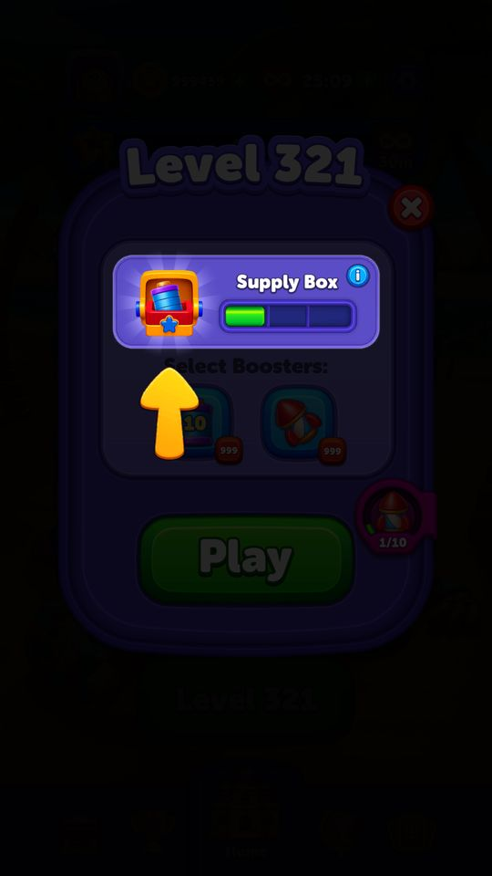
07/10: giới thiệu Supply Box 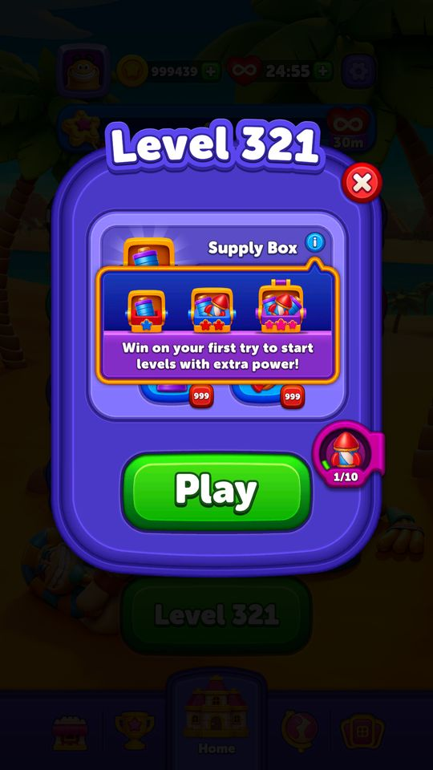
Tooltip 3 hộp quà - Thắng liền mạch: thanh đầy dầnNgười chơi PlaytestPopup trước màn 850 → 853: 0/3, 2/3, 3/3. Hộp quà to dần theo nấc.
- Gắn power-up đầu mànClient CodePlaytest
PowerUpController.TryGivePowerUpGrantsAsync: chọn khối hợp lệ (TryGetSpawnableBlock) rồi bay power-up vào. Duration là đồng hồ “+N” trên khối; Rocket gắn trên khối, phá ngay khi khối đó ra cửa.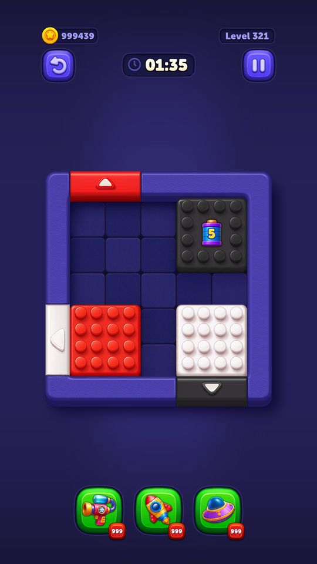
07/10: nấc 1, đồng hồ +5 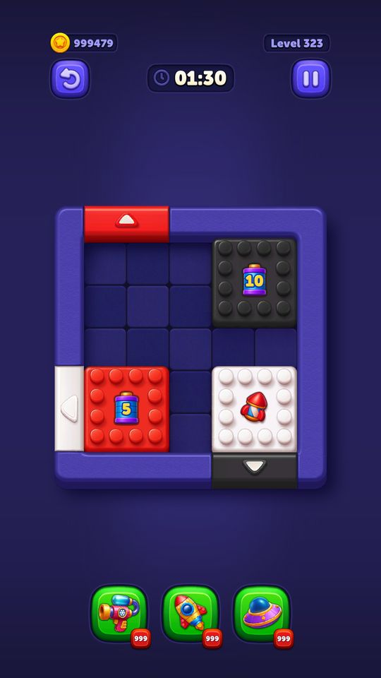
07/10: nấc 3, +5, +10 và rocket 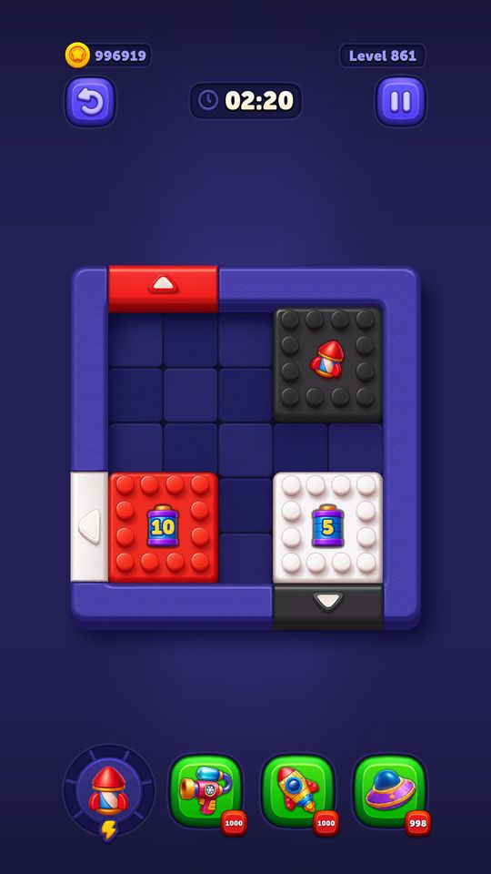
28/10: nấc 3 trên màn 861 - Bỏ màn / thuaNgười chơi PlaytestCảnh báo đầu tiên trong chuỗi “Are You Sure?” luôn là Supply Box (và Super Rocket nếu đang có). Sau đó popup Level Failed hiện thanh trống.
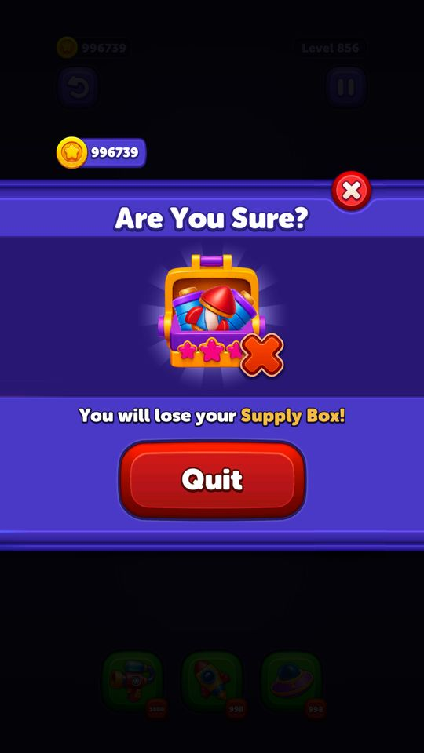
Cảnh báo mất Supply Box 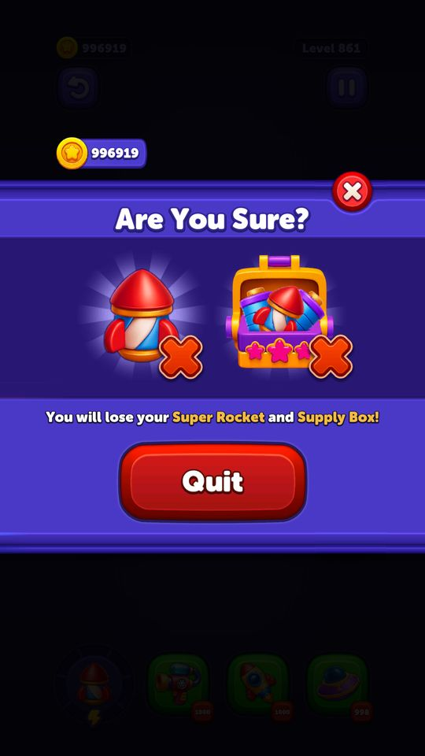
Mất cả Super Rocket và Supply Box 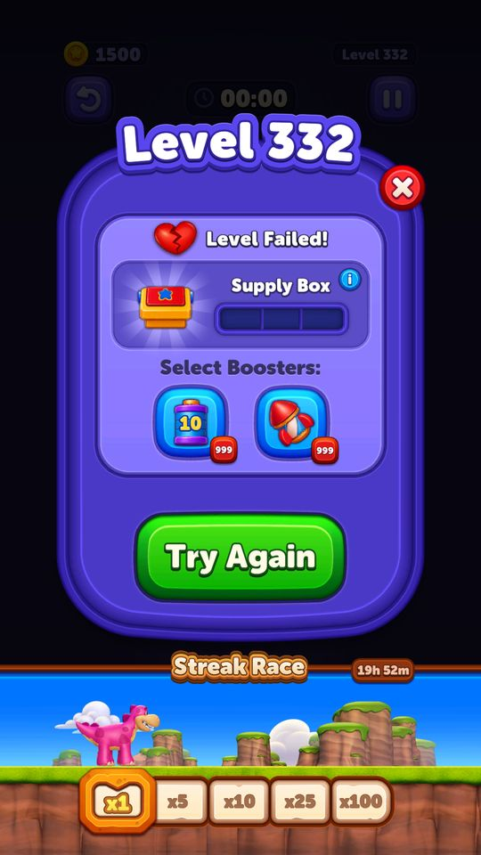
Level Failed: thanh về 0


Quà theo nấc (live 28/10)
| Nấc | Power-up đầu màn |
|---|---|
| 1 | Duration +5 giây |
| 2 | Duration +5 giây + Rocket |
| 3 | Duration +5 giây + Duration +10 giây + Rocket |
Live 28/10 butlerGrants; Rocket số lượng 1–1.
Vận dụng cho game khác
- Thưởng chuỗi thắng bằng power-up hiện ngay trên bàn: rẻ (vài giây, 1 rocket) nhưng nhìn thấy được, và tạo thêm một thứ để mất khi thua.
- Gom mọi thứ sắp mất vào cảnh báo khi bỏ màn (Supply Box, Super Rocket, chuỗi sự kiện) để mỗi lần thoát là một quyết định nặng ký.
Bảng tổng hợp mọi tính năng đã làm chi tiết: BlockOut_ThietKeChiTiet.xlsx.
Còn thiếu / chưa xác minh
Mở khóa & điểm vào
Live 28/10: isButlerEnabled = true, ButlerUnlockLevel = 101 (client mặc định 15). Bản 15/09 server đang tắt; đã bật lại trước 07/10.
Điểm vào:
- Hộp tiếp tế ở màn Home
Cách hoạt động
- Thắng màn -> SupplyBoxService.TryIncreaseProgress() -> SupplyBoxDataService.IncreaseProgress().
- Thua -> TryResetProgress() -> ResetSupplyBox().
- GetSupplyBoxGrants() trả về ButlerGrants của bậc tương ứng với chuỗi hiện tại (tối đa ButlerMaxStreakCount = 3 bậc).
- Vào màn, các grant được chuyển thành power-up qua PowerUpGrantReason.SupplyBox; IsSupplyBoxGrantsGivenInLevel / SetSupplyBoxGrantsGivenInLevel chống phát hai lần trong cùng một màn.
- SupplyBoxStateService cho SupplyBoxState (Disabled, Locked, Unlocked, Tutorial); GiveGrantsIfTutorial phát quà ngay trong lượt hướng dẫn.
Luồng chi tiết theo code
Thắng màn -> SupplyBoxService.TryIncreaseProgress() -> SupplyBoxDataService.IncreaseProgress(). Thua -> TryResetProgress() -> ResetSupplyBox(). GetSupplyBoxGrants() trả về ButlerGrants của bậc tương ứng với chuỗi hiện tại (tối đa ButlerMaxStreakCount = 3 bậc). Vào màn, các grant được chuyển thành power-up qua PowerUpGrantReason.SupplyBox; IsSupplyBoxGrantsGivenInLevel / SetSupplyBoxGrantsGivenInLevel chống phát hai lần trong cùng một màn. SupplyBoxStateService cho SupplyBoxState (Disabled, Locked, Unlocked, Tutorial); GiveGrantsIfTutorial phát quà ngay trong lượt hướng dẫn.
Ảnh chụp màn hình (8)
8 ảnh chụp trong game (LDPlayer, bản 1006, tài khoản thử level 320 → 350 (07/10/2026)). Bấm ảnh để phóng to; nhãn UC dẫn tới use case tương ứng.

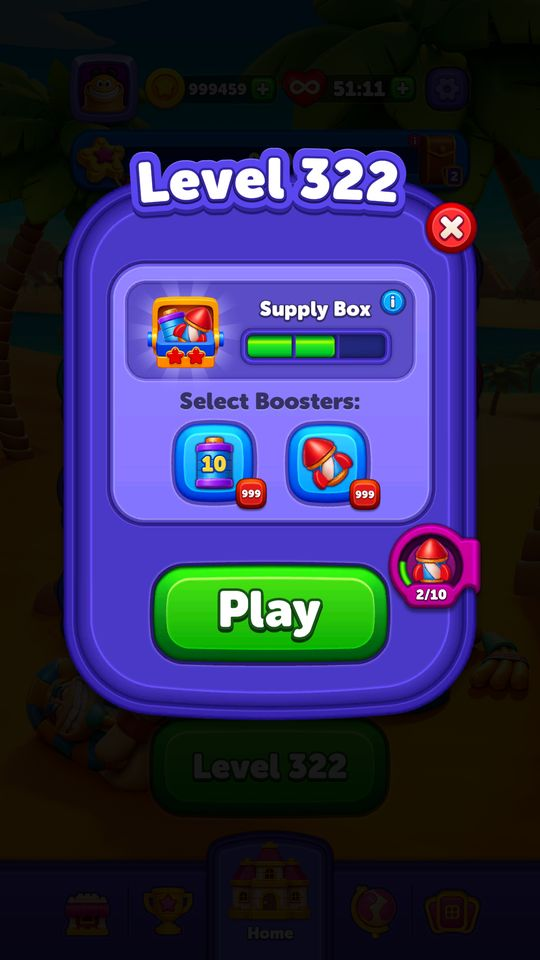

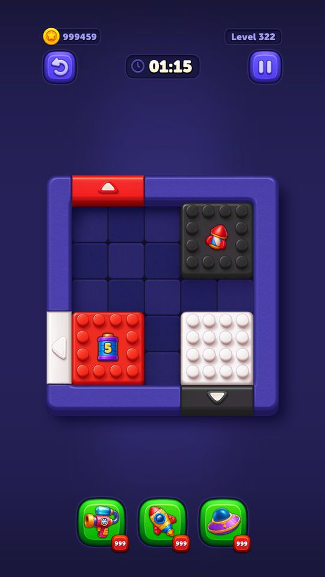

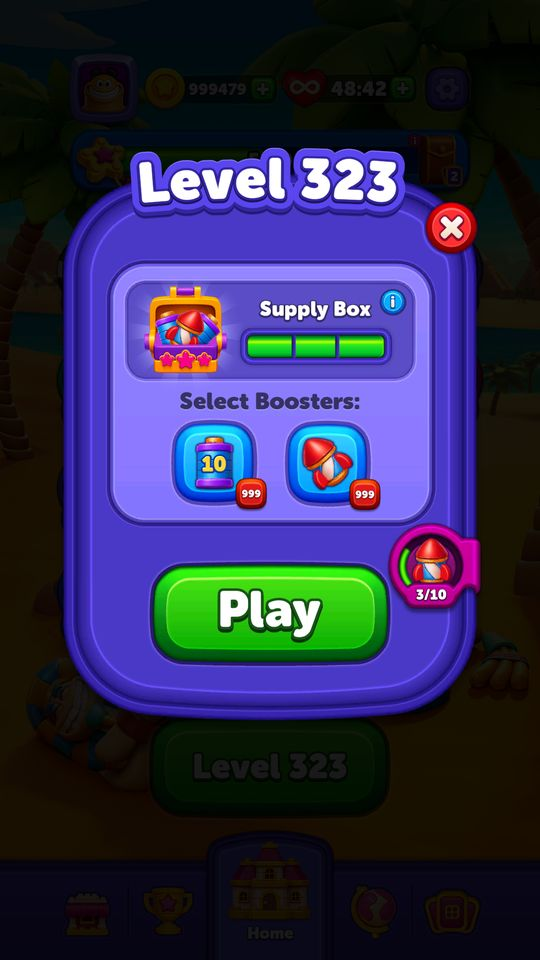
Phần thưởng
Phần thưởng theo code
| Ngữ cảnh | Phần thưởng | Evidence |
|---|---|---|
| Chuỗi bậc 1 | Duration power-up 5 giây | ButlerConfigModel.ButlerGrants[0] |
| Chuỗi bậc 2 | Duration 5 giây 1 Rocket | ButlerConfigModel.ButlerGrants[1] |
| Chuỗi bậc 3 | Duration 5 Duration 10 1 Rocket | ButlerConfigModel.ButlerGrants[2] |
Số liệu chính
| Chỉ số | Giá trị | Nguồn |
|---|---|---|
| ButlerConfigModel.ButlerMaxStreakCount | 3 | ButlerConfigModel.ButlerMaxStreakCount — Assets/Resources/defaultconfigs/ButlerConfigModel.json |
| ButlerConfigModel.MinRocketCount | 1 | ButlerConfigModel.MinRocketCount — Assets/Resources/defaultconfigs/ButlerConfigModel.json |
| ButlerConfigModel.ButlerGrants[0].Grants[0].Duration | 5 | ButlerConfigModel.ButlerGrants[0].Grants[0].Duration — Assets/Resources/defaultconfigs/ButlerConfigModel.json |
| ButlerConfigModel.ButlerGrants[1].Grants[0].Duration | 5 | ButlerConfigModel.ButlerGrants[1].Grants[0].Duration — Assets/Resources/defaultconfigs/ButlerConfigModel.json |
| ButlerConfigModel.ButlerGrants[2].Grants[0].Duration | 5 | ButlerConfigModel.ButlerGrants[2].Grants[0].Duration — Assets/Resources/defaultconfigs/ButlerConfigModel.json |
| ButlerConfigModel.ButlerGrants[2].Grants[1].Duration | 10 | ButlerConfigModel.ButlerGrants[2].Grants[1].Duration — Assets/Resources/defaultconfigs/ButlerConfigModel.json |
Use case (4)
Bấm vào từng use case để mở. Mở/đóng tất cả
UC-01 Thắng liên tiếp, chuỗi tăng
Các bước- SupplyBoxService.TryIncreaseProgress()
- SupplyBoxDataService.IncreaseProgress()
- MarkDataForLateUpdate() đánh dấu để đồng bộ
| Actor | System |
|---|---|
| Trigger | Thắng màn |
| Điều kiện | Tính năng bật và đã mở khoá |
| Kết quả | Bậc thưởng lên cao hơn |
| Quy tắc / số liệu | Tối đa 3 bậc (ButlerMaxStreakCount) |
| Evidence | SupplyBoxService.TryIncreaseProgress; SupplyBoxDataService.IncreaseProgress |
UC-02 Nhận quà theo bậc chuỗi
Các bước- GetSupplyBoxGrants() trả ButlerGrants của bậc hiện tại
- IsSupplyBoxGrantsGivenInLevel() trả false
- Chuyển từng grant thành power-up (PowerUpGrantReason.SupplyBox)
- SetSupplyBoxGrantsGivenInLevel(true)
| Actor | System |
|---|---|
| Trigger | Bắt đầu màn mới |
| Điều kiện | Chuỗi > 0 và chưa phát trong màn này |
| Kết quả | Bàn bắt đầu đã có power-up |
| Quy tắc / số liệu | Bậc 1: Duration 5 giây. Bậc 2: Duration 5 + 1 Rocket. Bậc 3: Duration 5 + Duration 10 + 1 Rocket (giống nhau ở client và server, chỉ khác cách ghi ButlerGrantItemType bằng tên hay bằng số) |
| Evidence | SupplyBoxService.GetSupplyBoxGrants; SupplyBoxDataService.IsSupplyBoxGrantsGivenInLevel; ButlerConfigModel.ButlerGrants |
UC-03 Thua — mất chuỗi
Các bước- SupplyBoxService.TryResetProgress()
- SupplyBoxDataService.ResetSupplyBox()
| Actor | System |
|---|---|
| Trigger | Thua màn |
| Điều kiện | - |
| Kết quả | Về bậc 0 |
| Quy tắc / số liệu | - |
| Evidence | SupplyBoxService.TryResetProgress; SupplyBoxDataService.ResetSupplyBox |
UC-04 Hướng dẫn lần đầu
Các bước- SupplyBoxState = Tutorial
- GiveGrantsIfTutorial() phát quà ngay
- MarkTutorialAsShown()
- TryMarkTutorialAsCompleted()
| Actor | System |
|---|---|
| Trigger | Vừa mở khoá |
| Điều kiện | - |
| Kết quả | Người chơi thấy giá trị ngay lần đầu |
| Quy tắc / số liệu | - |
| Evidence | SupplyBoxService.GiveGrantsIfTutorial; MarkTutorialAsShown; enum SupplyBoxState |
Cấu hình (17)
Gộp mọi nguồn: const trong code, JSON mặc định trong Resources, bảng static, storage key, AB test, cờ server.
| Nguồn | Key | Kiểu | Giá trị | Ý nghĩa | Nơi định nghĩa |
|---|---|---|---|---|---|
| json default | ButlerConfigModel.IsButlerEnabled | bool | false | Assets/Resources/defaultconfigs/ButlerConfigModel.json | |
| json default | ButlerConfigModel.ButlerUnlockLevel | int | 101 — server đang chạy; mặc định client: 15 | Assets/Resources/defaultconfigs/ButlerConfigModel.json | |
| json default | ButlerConfigModel.ButlerMaxStreakCount | int | 3 | Assets/Resources/defaultconfigs/ButlerConfigModel.json | |
| json default | ButlerConfigModel.MinRocketCount | int | 1 | Assets/Resources/defaultconfigs/ButlerConfigModel.json | |
| json default | ButlerConfigModel.MaxRocketCount | int | 1 — server đang chạy; mặc định client: 2 | Assets/Resources/defaultconfigs/ButlerConfigModel.json | |
| json default | ButlerConfigModel.ButlerGrants[0].Grants[0].ButlerGrantItemType | string | Duration (server ghi là 2 — cùng giá trị, khác cách ghi) | Assets/Resources/defaultconfigs/ButlerConfigModel.json | |
| json default | ButlerConfigModel.ButlerGrants[0].Grants[0].Duration | int | 5 | Assets/Resources/defaultconfigs/ButlerConfigModel.json | |
| json default | ButlerConfigModel.ButlerGrants[1].Grants[0].ButlerGrantItemType | string | Duration (server ghi là 2 — cùng giá trị, khác cách ghi) | Assets/Resources/defaultconfigs/ButlerConfigModel.json | |
| json default | ButlerConfigModel.ButlerGrants[1].Grants[0].Duration | int | 5 | Assets/Resources/defaultconfigs/ButlerConfigModel.json | |
| json default | ButlerConfigModel.ButlerGrants[1].Grants[1].ButlerGrantItemType | string | Rocket (server ghi là 1 — cùng giá trị, khác cách ghi) | Assets/Resources/defaultconfigs/ButlerConfigModel.json | |
| json default | ButlerConfigModel.ButlerGrants[2].Grants[0].ButlerGrantItemType | string | Duration (server ghi là 2 — cùng giá trị, khác cách ghi) | Assets/Resources/defaultconfigs/ButlerConfigModel.json | |
| json default | ButlerConfigModel.ButlerGrants[2].Grants[0].Duration | int | 5 | Assets/Resources/defaultconfigs/ButlerConfigModel.json | |
| json default | ButlerConfigModel.ButlerGrants[2].Grants[1].ButlerGrantItemType | string | Duration (server ghi là 2 — cùng giá trị, khác cách ghi) | Assets/Resources/defaultconfigs/ButlerConfigModel.json | |
| json default | ButlerConfigModel.ButlerGrants[2].Grants[1].Duration | int | 10 | Assets/Resources/defaultconfigs/ButlerConfigModel.json | |
| json default | ButlerConfigModel.ButlerGrants[2].Grants[2].ButlerGrantItemType | string | Rocket (server ghi là 1 — cùng giá trị, khác cách ghi) | Assets/Resources/defaultconfigs/ButlerConfigModel.json | |
| server info | ButlerConfigModel.butlerGrants[1].grants[1].duration | int | 0 — chỉ server gửi, client không đóng sẵn giá trị mặc định | DeviceRuntime CachedRemoteConfigs | |
| server info | ButlerConfigModel.butlerGrants[2].grants[2].duration | int | 0 — chỉ server gửi, client không đóng sẵn giá trị mặc định | DeviceRuntime CachedRemoteConfigs |
Giao diện (UI)
| Element | Class | Mục đích |
|---|---|---|
| Hộp tiếp tế | Modules.Contexts.Home.Butler | hiện bậc chuỗi hiện tại |
Storage keys
ButlerModel (tiến độ chuỗi, cờ đã phát trong màn, cờ đã xem hướng dẫn)
Chưa đọc được / ghi chú
- ButlerGrantItemType chỉ thấy hai giá trị (Rocket=1, Duration=2), chưa rõ có loại thứ ba không.
Tính năng liên quan
Power-up sinh trong bàn (Rocket / Duration) Super Rocket (Light Ball) Pre-Booster (chọn power-up trước khi vào màn)
Nguồn đã đọc
- PseudoC/.../Home/Butler/SupplyBoxService.c
- Assets/Resources/defaultconfigs/ButlerConfigModel.json